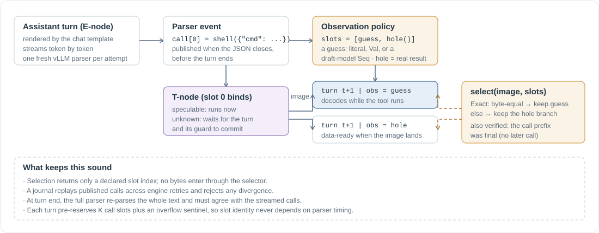

Tools and the tool loop¶
A tool call is where an agent touches the outside world. Two things about it are new compared to a model request: its body may have effects that must not be repeated, and its result is an observation whose bytes the runtime cannot predict from the graph. AgentIR handles both with explicit contracts, and then speculates across tool calls the same way it speculates across selections: by declaring candidate observations and guarding the continuation built on each.

{kind=link}
T-nodes and the effect contract¶
A tool execution is a T-node: tool name, canonical JSON arguments, DrawId, and an effect class. tool(fn, args, effect=...) registers one explicitly; the autonomous loop registers them from parsed model calls. The body receives one argument dictionary.
effect |
When the body runs | What you promise |
|---|---|---|
"unknown" (default) |
after its guard is true and every handle it reads has committed; at most once; never retried | nothing, this is the safe default |
"speculable" |
as soon as the tool scheduler admits it, possibly under a pending guard; retried up to 3 times per phase | extra executions and retries are harmless, and the observation is stable enough to replay |
Cancellation is exact at the admission boundary: an unstarted speculative body is removed without ever running. A body that has already started cannot be stopped, which is precisely what speculable licenses. Arguments may contain Val and Choice handles anywhere in the JSON tree; they resolve before hashing, and every handle found becomes part of the unknown-effect dependency fence. A Seq in an argument is rejected: content leaves a Seq only through an exit.
Observations: raw result, projection, image¶
The raw return value of a body never enters a prompt. A projection alpha(raw) reduces it to an image: a string, or a JSON-compatible value rendered canonically. Images are what obs(t) splices into a spine (as a late-binding Obs segment), what observe(t) returns as a Val, and what the verification harness records and replays.
Projections are named and content-addressed by a descriptor of their callable, so two projections of one T-node are two Obs segments over one execution and adding a projection never re-runs the body. The image is encoded to atoms lazily, at the first prompt that needs it; on the remote wire that is a /tokenize request worth not paying for a losing branch.
Three primitives turn an observation into a decision: expect(t, guess) is a two-slot hit-or-miss decision that injects the guess bytes into the hit branch; classify(t, cases) routes an exact image through a closed mapping; ack(t) resolves when the body finished, for gating on completion alone.
Observation policies¶
The autonomous loop wraps each tool in a ToolDef whose obs policy has four methods:
| Method | Role |
|---|---|
new_session() |
a fresh call-local instance (shallow copy by default) |
project(raw) |
the pure projection |
slots(state, call) |
the candidate images declared before the tool result exists |
select(image, slots) |
pick one declared slot index, reading the lazy real image if it needs to |
The built-ins: Exact (the real image, with any guesses verified by byte equality), Ignore(text) (a constant, never reads the result), Project(alpha) (a reduced image), and Enum(cases, by) (a closed set of representatives plus an optional real-result hole). hole() marks the slot that is filled by the real observation. Selection is evaluated once per call in an advisory scope where model generation and unknown effects are forbidden, so a selector cannot smuggle a new observation into the graph.
A guess is a predictor: a literal string, a callable returning a Val, or a callable that traces ordinary DSL calls (a draft model, for instance). A plain ToolDef(fn) with no obs and no guess gets the default draft predictor, a 32-token same-role sample whose candidate count is calibrated online from observed hit rates and latencies. A predictor that has not finished when the real observation lands is abandoned, so a slow guess never extends the critical path.
One round of the loop¶
infer(task, tools=..., max_turns=N) runs the loop in infer_tools. Per turn:
- Render the conversation with the engine's chat template and tool schemas, and register the assistant turn as an E-node with a stream projection frozen into its identity: the model family's vLLM parser, structural constraints, and reasoning-parser state.
- Pre-reserve the round template. Before any byte streams, the tracer creates
max_callsdeferred call slots plus an overflow sentinel, each with an existence gate and a publication gate, and reserves the next turn's draw. Slot identity therefore never depends on parser timing. - Stream and parse. Each engine delta goes through a fresh vLLM parser instance. A cheap structural scanner watches the argument bytes; when they could form a complete JSON value, the strict decoder tries, and a closed call is published to a per-node journal.
- Dispatch. The published call binds its slot to a real T-node. Speculable bodies start now; unknown bodies wait for the turn and its guard to commit. For families whose calls close early, the tracer also registers the predict-taken next turn: assuming this call prefix is the whole inventory, it declares slots, spawns one guarded continuation per closed candidate, and starts the selector.
- Terminate. At end of turn the full parser re-parses the entire text and must reproduce exactly the streamed inventory. Prefix guesses that turned out shorter than the real call list are squashed; the exact one commits.
- Select. When the real image lands,
selectruns once. A hit keeps the guessed continuation; a miss keeps the hole continuation, which is data-ready now that the image exists. Multi-call rounds keep one representative vector across slots, never a Cartesian product, and fall back to a concrete barrier on any unsupported shape.
The tool loop requires the token wire so that boundary and special tokens stay in the spine. Stop strings are refused in tool loops because they would truncate text without preserving the parser's boundary tokens.
Why retries and replays stay exact¶
Every published call is journaled per logical E-node. A retried engine attempt replays through the same journal: it must reproduce the already-published prefix event for event, and a divergence raises ProjectionDivergence instead of dispatching a call twice. Deterministic parser failures are ProjectionErrors, not engine errors: retrying the same seeded decode cannot repair malformed syntax, so the scheduler defers the error while the world is pending and surfaces it only if the world commits.
Model families are resolved from an explicit table (GPT-OSS, Qwen3-Coder, Qwen3.5+, Qwen3, Qwen2, DeepSeek-V3.1, Llama-3, Mistral). An unknown model is an error rather than a silent Hermes fallback, because the wrong parser would reinterpret ordinary text as a tool call.
In the code¶
tracing/tools.py:ToolDef,infer_tools,_collect_round,_new_round_template,_speculative_candidates,_select_once.tracing/policy.py:Policy,Exact,Ignore,Project,Enum,LazyImage,hole.tracing/predictor.py: the default draft predictor and its calibration.tracing/tool_slots.py: deferred slots and families.execution/tools.py:ToolRecord, projections, image rendering.execution/tool_stream.py: family profiles, the JSON closure scanner, the journal, the terminal cross-check.- Tests:
test_tools_loop.py,test_tools_lowering.py,test_tool_stream.py,test_tool_policy.py,test_deferred_tool_slots.py,test_default_predictor.py.
Next: Verification, which proves that none of this changed the answer.